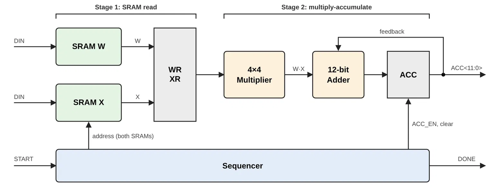
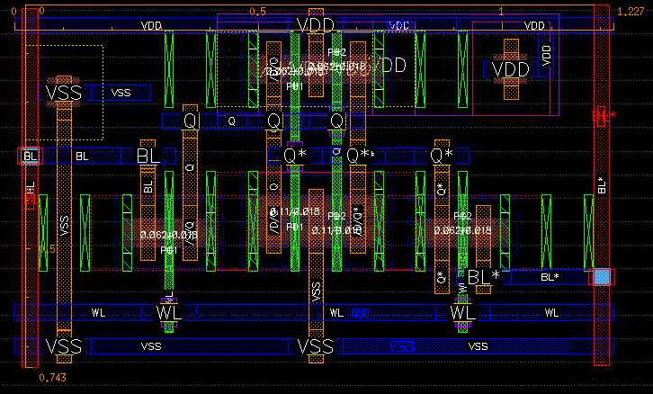
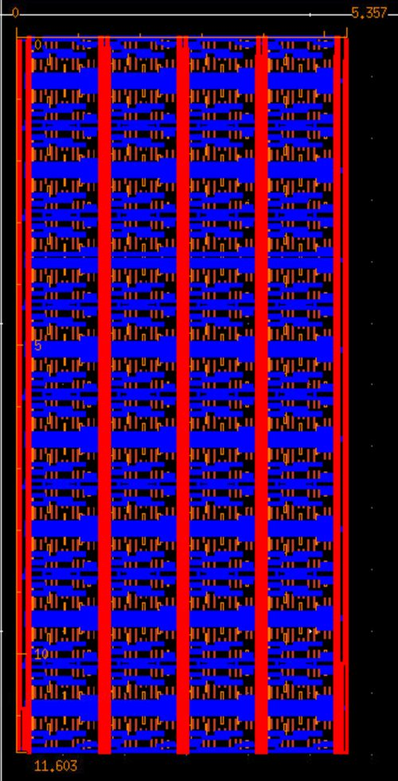
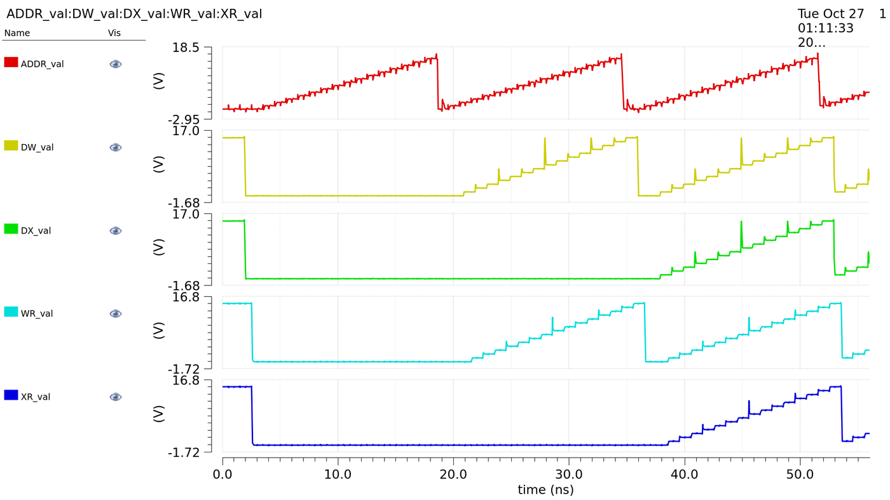

Pipelined MAC with two 16×4 SRAMs
A full-custom, transistor-level multiply-accumulate unit in Cadence Virtuoso, from a single 6T bitcell up to a verified dot product, in a FinFET process at 0.8 V.
Architecture

A two-stage pipeline: both SRAMs are read in one cycle, then a 4×4 array multiplier and 12-bit ripple-carry adder accumulate in the next. An FSM sequencer steps through all 16 addresses, so DONE rises 18 cycles after START.
The bitcell

| Post-layout, 0.8 V | Value |
|---|---|
| Hold SNM | 284 mV |
| Read SNM | 151 mV |
| Write margin | 236 mV |
| Read current | 23.45 µA |
Sized by hand to a 3-fin pull-down with β = 1.5, then checked against simulation after Quantus extraction. It still reads and writes at 0.5 V.
The SRAM
Each SRAM has a 2-2 predecoded row decoder (163 ps, chosen over a 264 ps flat NAND4), a sense amp, precharge, write drivers, and a timing controller built from one inverter delay chain. A 64-cycle checkerboard test passed all 32 reads.
| Metric | Value |
|---|---|
| Access time | 440 ps |
| Clock period | 0.75 ns |
| Write / read power | 120 / 135 µW |
| Area | 159.3 µm² |

The MAC

Custom flip-flops (94 ps setup, 68–85 ps clock-to-Q), with the adder carry path sized by logical effort down to 7τ per bit. The multiply-add stage limits the clock to 1.1 ns, and every path meets hold with at least 70 ps of margin.